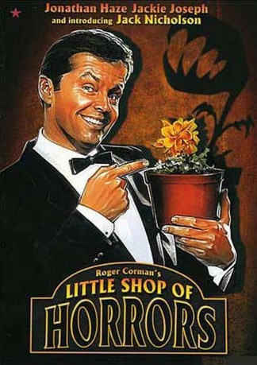

IMDB-Wertung: 6.3 / 10
IMDB-Wertung: 6.3 / 10  Metascore:
Metascore: 
Blumenhändler Seymour päppelt eine fleischfressende Pflanze hoch, die seinen maroden Laden zur Kundenattraktion macht - dummerweise muss das Monster mit eben diesen gefüttert werden…
Remastered in Color
Alternativ: The Little Shop of Horrors
 IMDB-Wertung: 6.3 / 10 Metascore:
Blumenhändler Seymour päppelt eine fleischfressende Pflanze hoch, die seinen maroden Laden zur Kundenattraktion macht - dummerweise muss das Monster mit eben diesen gefüttert werden…
Remastered in Color
Jahr: 1960
Dauer: 71 Minuten
FSK:
Land: USA Studio: The FilmgroupTonspuren: DD2.0 - ,
Untertitel:
Auflösung: 1080p (1440x1080) Größe: 5601 MB
Regisseur:  Roger Corman, Charles B. Griffith, Mel Welles
Roger Corman, Charles B. Griffith, Mel Welles
Drehbuch: Charles B. Griffith, Roger Corman
Soundtrack: Fred Katz, Ronald Stein
Darsteller:
 Jackie Joseph als Audrey Fulquard
Jackie Joseph als Audrey Fulquard Dick Miller als Fouch
Dick Miller als Fouch Jack Nicholson als Wilbur Force
Jack Nicholson als Wilbur Force Frank Mills als Man in Crowd Outside Shop (uncredited)
Frank Mills als Man in Crowd Outside Shop (uncredited)Datei: X:\1960\Kleiner Laden voller Schrecken (1960, FSK, 1440x1080).mkv seit 28.10.2018
Festplatte: HD 1900-1970
 Es gibt insgesamt 21 Filme in der Gruppe '1960'
Es gibt insgesamt 21 Filme in der Gruppe '1960'